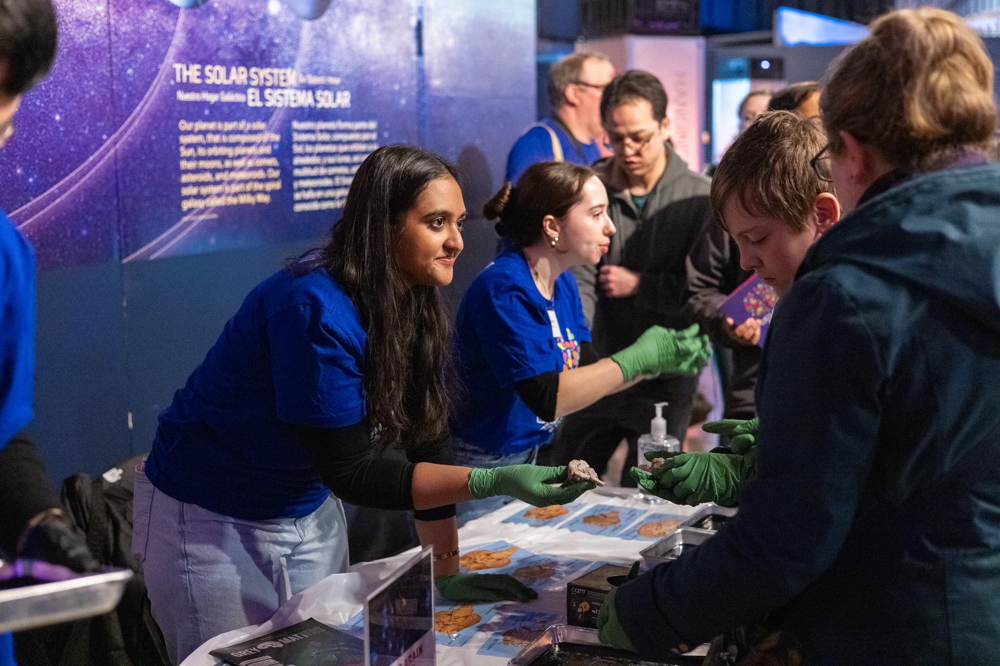
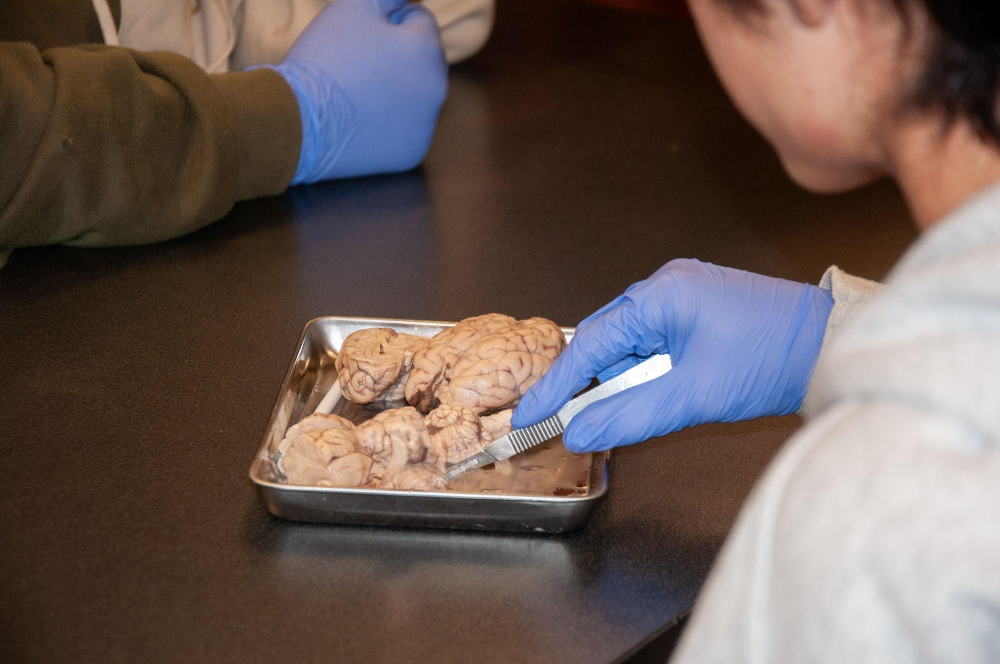
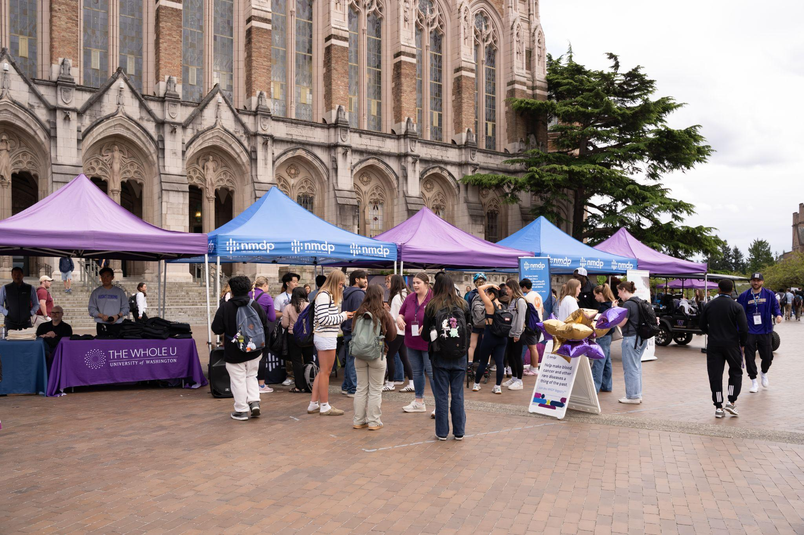
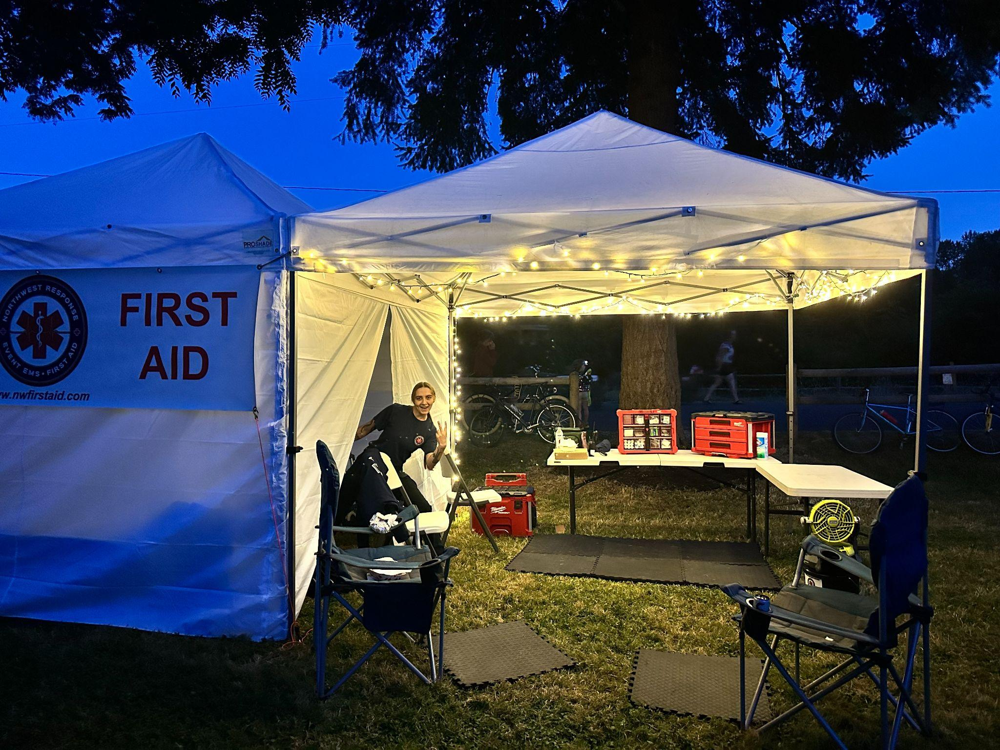

Public Health Portfolio
Arikta Trivedi
Public Health: Global Health · Biology: Physiology · University of Washington
About Me →Categories of Work
About Me
About Me
My name is Arikta Trivedi, and I am a double major in Biology: Physiology and Public Health-Global Health at the University of Washington. This portfolio highlights the experiences that have shaped how I think about science and patient care, including laboratory research, clinical research in a Level I trauma center, emergency medical work, and community health outreach through student organizations.
Public Health - Global Health
My long-term goal is to become a physician who practices at the intersection of clinical care and public health.
Studying public health alongside biology has allowed me to see healthcare from both a systems and an individual perspective. Biology has grounded me in the mechanisms of disease, physiology, and evidence generation, while public health has pushed me to think about access, education, ethics, and the broader social context that shapes health outcomes.
My long-term goal is to become a physician who practices at the intersection of clinical care and public health. I hope to contribute to patient care that is not only scientifically rigorous but also ethically grounded and responsive to the communities it serves. The experiences reflected in this portfolio represent the foundation I am building toward that future.
Experience at a Glance
Health Education
Health Education Outreach Through Student Organizations
Breaking Neuroscience Barriers in Seattle Schools
As Outreach Coordinator for Grey Matters, an undergraduate neuroscience journal focused on making neuroscience accessible to the community, I helped lead and facilitate interactive lessons in K-12 classrooms and STEM events across Seattle. I joined Grey Matters because I genuinely enjoy working with students and saw it as an opportunity to strengthen my own understanding of neuroscience by teaching it. Explaining topics like brain anatomy and neural signaling forced me to simplify complex ideas without losing accuracy. In my leadership role, I organized outreach events, coordinated volunteers, and guided hands-on activities such as sheep brain dissections and neurotechnology demonstrations.
Many of the schools we visited had limited access to hands-on science education, and several classrooms included multilingual students or students with little prior exposure to neuroscience. At first, I thought breaking barriers simply meant bringing resources into under-resourced schools. Over time, I realized barriers are not uniform. For some students, language made scientific vocabulary intimidating. For others, a lack of background knowledge made them hesitant to participate. Some students were disengaged because they had never seen science presented in a way that felt relevant to their lives. I learned to adjust in real time as I conducted the activity by connecting neuroscience topics to their everyday lives. For athletes, I talked about sports injuries. For musicians, I explained how the cerebellum helps with coordination and timing. And for students who seemed uninterested, I would jokingly point to the frontal lobe and tell them their personality and judgment were still "under construction". Breaking barriers required flexibility and attention rather than a fixed script. This experience shifted how I approach teaching. Inclusion is not about repeating the same explanation louder or simpler. It is about understanding that every student brings their own background, confidence level, and challenges.
Through this work, I strengthened my skills in science communication, leadership, and adaptability, but I also learned to approach teaching with greater awareness and humility. That mindset now carries into other areas of my life, from peer facilitation to research discussions, reminding me that understanding begins with meeting people where they are.
Artifact


One of my first outreach events at Brain Fest, hosted by the Pacific Science Center. Speaking with young students about the brain at this event motivated me to continue outreach work and eventually pursue a leadership role.
Promoting Informed Consent Through the Stem Cell Registry
I first became involved with the National Marrow Donor Program (NMDP) University of Washington chapter because it was one of the few student organizations where I felt I could make a tangible impact in healthcare so early in my journey. NMDP maintains a national registry of potential stem cell donors who may be matched with patients facing life-threatening blood cancers and blood disorders. Our campus chapter hosted donor recruitment drives where students could learn about stem cell donation, ask questions, and join the registry through a simple cheek swab. I began as Social Media Chair and later served as Co-President, helping coordinate events, train volunteers, and lead one-on-one conversations about what donation actually involves.
Early on, I focused heavily on numbers. Our chapter received recruitment goals from regional managers, and success often felt tied to how many students we registered. I would start conversations by emphasizing how quick the process was and only go into detail if someone asked. Over time, that mindset shifted. I saw how differently people responded to the same information. Some students were immediately ready to register, while others hesitated because they were afraid of needles or unsure what donation would require. That perspective further shifted when we campaigned for a patient who found a match after waiting a long time, only to have the donor withdraw. Patients are notified when a match is identified, so this individual experienced hope before it was taken away. Knowing that the donor could have been their only match changed how I understood the responsibility behind our drives.
I stopped thinking about recruitment as persuasion and started thinking about it as education. My approach became less about convincing and more about making sure people understood the process well enough to make an informed decision. I now spend time walking each person through what the registry is, why it matters, and what donation would involve if they matched. If I sense hesitation, I encourage them to take more time and come back to a future drive.
From this experience, I learned that community-based health work depends on trust and transparency. Through NMDP, I learned that education is not just a step in the process. It is the foundation of ethical participation. Seeing the impact of donation through patient stories and meeting individuals whose cancer was cured through a transplant made the responsibility feel real. This experience strengthened my commitment to patient autonomy and reinforced that informed consent begins long before someone even enters a clinical setting.
Artifact

Annual stem cell donor recruitment drive hosted in collaboration with University of Washington Athletics, one of our largest events of the year. I helped plan and lead this drive, which resulted in over 100 registry sign-ups in a single day. One individual who joined the registry at this event later went on to donate stem cells to a patient in need.
Research
Learning Self-Advocacy Through Collaborative Research
Exploring Metabolic Disease Through AgRP Neuron Research
I initially joined laboratory research because I wanted to have a deeper understanding of the foundation of all medicine: research. In my lab, we studied how agouti-related peptide (AgRP) neurons influence glucose balance and energy regulation using mouse models. As an undergraduate researcher, I collected metabolic measurements, prepared brain tissue through freezing and sectioning, performed immunohistochemistry, and supported experiments on feeding behavior and glucose regulation. At first, the work felt procedural. I followed protocols carefully, but did not yet see how each step fit into the larger question. Over time, seeing stained brain sections under the microscope and connecting them to glucose data and behavioral graphs helped me understand how cellular findings inform conversations about chronic disease and prevention.
The most formative part of this experience came not from technical work, but from when I was applying for an undergraduate research symposium. My mentor of three years had just left the lab, and I transitioned to a new mentor with whom I had no established relationship. With a short timeline approaching, I was nearly assigned a large project that required scientific background knowledge of work already done by other postdocs in our lab, which I did not have. I felt pressure to accept it, especially as an undergraduate surrounded by much more experienced researchers. I worried that pushing back would make me seem incapable or ungrateful. At the same time, I knew the proposed project did not reflect the work I had actually contributed to in my time in the lab. I wanted to present a project based on data I had helped generate with my previous mentor, and I understood a lot better. Speaking up meant questioning the direction given to me and admitting that the timeline and scope were unrealistic.
I chose to have a conversation with my new mentor despite my fear. I explained that the scope of the suggested project was unrealistic given the timeline and shared a clear plan for an alternative project grounded in my prior work. When I was finally able to submit the abstract for the project I had initially envisioned, it was a turning point in my research journey. I realized that research is more than technical skills and data; it also requires claiming ownership of your contributions and trusting your judgment. As I pursue a career that bridges medicine and public health, I know I will continue working in hierarchical and high-pressure environments. This experience taught me that thoughtful self-advocacy is not selfish or confrontational, but a very important foundation. If I can't confidently advocate for my own work, I won't be prepared to advocate for patients navigating our complex health system. Learning to use my voice in research strengthened my ability to one day use it on behalf of others, ensuring that my work reflects both my abilities and the needs of the communities I hope to serve.
Artifact · Published Paper
Published research article from the Journal of Clinical Investigation (2025) to which I contributed as a co-author, including metabolic measurements and tissue analysis.
Conducting a Cross-Sectional Study on Academic Burden and Exercise
In Research Methods in Public Health (SPH 480), a core course for my major, I helped design and conduct a cross-sectional study examining whether higher academic workload was associated with lower levels of physical activity among undergraduate students. We developed a formal research protocol outlining our study population, recruitment strategy, survey, and analytic plan. Using a survey-based design, we collected data, operationalized key variables such as academic burden and exercise frequency, cleaned datasets, and conducted statistical analysis alongside interpretation of open-ended responses. This project introduced me to non-bench research and strengthened my understanding of population-level data analysis within a structural public health framework.
Midway through the project, collaboration became our biggest challenge. Although we were peers, responsibilities were not evenly distributed. Without a hierarchy, accountability depended entirely on communication. Addressing uneven participation felt uncomfortable because it required direct conversations about workload and expectations. I worked with my peers to clarify deadlines and redistribute responsibilities. In public health research, the quality of the work depends on everyone contributing fully. If survey design, data cleaning, or analysis is rushed or uneven, the final conclusions suffer.
By the end of the quarter, we produced a final research report that analyzed our findings using core public health concepts and data-driven reasoning. More importantly, I strengthened a different form of self-advocacy. In this setting, advocacy did not mean challenging authority; it meant protecting the integrity of collaborative work among equals. This experience showed me that public health work is not just about knowing how to analyze data. It is also about communicating clearly and working well with others. As I move toward a career in medicine and public health, I know these skills will matter just as much as technical knowledge.
Artifact · Final Research Report
Final research report from our cross-sectional survey study examining the relationship between academic workload and physical activity among undergraduate students.
Clinical
Clinical Decision-Making Across Care Settings
Providing Emergency Care in Unpredictable Community Environments
I work as an event Emergency Medical Technician, providing on-site care at large public events. I pursued this role because I wanted more direct patient interaction and to experience what real-time medical decision-making actually feels like outside of a classroom to support my future career path as a physician. Event medicine is very different from hospital care. It often means working in crowded, loud, and unpredictable environments with limited equipment and support. My responsibilities include assessing patients, taking vital signs, stabilizing conditions when possible, and deciding whether a situation can be managed on site or needs to be escalated by calling 911.
One moment that stayed with me happened at a music festival when a patient passed out on a suspended wooden rope bridge over a river. The bridge was swinging, people were crossing from both sides, and loud music from a nearby stage made it difficult to communicate. Before even thinking about the patient assessment, I had to focus on securing the scene and making sure no one else was at risk. Taking a manual blood pressure while standing on a moving bridge forced me to narrow my attention and concentrate only on what was essential. That experience made me realize that clinical care is not just about knowing what to do. It is about judgment, prioritization, and staying calm enough to think clearly when everything around you feels chaotic.
This role reshaped how I approached decision-making in emergency settings. At events, we do not have hospital-level resources, and patient safety sometimes means deferring to a higher level of care and calling 911. Early on, I felt pressure to handle as much as possible on my own. Over time, I have learned that patient safety comes first, even if that means stepping back and involving a higher level of care. This experience has strengthened my confidence in decision-making while also teaching me humility. Good clinical care is not about proving you can handle everything. It is about knowing when to escalate and trusting the larger emergency response system.
Artifact

This is a picture of our setup at an outdoor music festival. It shows how non-traditional the environment is and how often we don't have all the supplies of a fully equipped ambulance.
Navigating Patient Vulnerability in Inpatient Clinical Research
I joined clinical cardiology research at Harborview Medical Center because I wanted experience speaking directly with patients in a hospital setting while contributing to ongoing medical research. Harborview is a Level I trauma center, and much of my work took place on inpatient units where patients were recovering from severe injuries or complex medical conditions. I worked on studies related to sleep-disordered breathing and cardiovascular health. My responsibilities included reviewing charts to determine eligibility, approaching patients to explain the study and obtain consent, and teaching them how to use home-based monitoring devices. On paper, the process appeared straightforward: identify eligible patients and follow protocol.
In practice, it was not that simple. One afternoon, I reviewed the chart of a patient who met every eligibility criterion. Their record included multiple fractures, recent procedures, and detailed trauma notes. From a research standpoint, they were a strong candidate due to their history of cardiovascular health. I rehearsed how I would introduce the study and walked to the room. Inside, the patient sat upright in visible discomfort while family members quietly gathered around the bed. The atmosphere felt heavy. I introduced myself and began explaining the study, but as I spoke, I sensed that their attention was divided between pain, family conversation, and their current reality of being hospitalized. Although they qualified for the study, they were not in a place to take on something new. I shortened my explanation, reassured them there was no pressure to participate, and stepped away without pushing further.
That interaction reshaped how I understood clinical research. The protocol provided structure, but it did not replace judgment. Not every eligible patient was ready, and readiness could not be determined from a chart alone. Navigating patient vulnerability meant recognizing when someone had the capacity to engage and when they needed space. I learned that meeting patients where they were sometimes required stepping back, even when the study would have benefited from their enrollment. This balance between responsibility and restraint became central to how I approached clinical environments. As I move toward a career as a physician, I know this lesson will remain foundational. Medical decisions do not occur in isolation from a patient's emotional and physical state. Treating someone well will require not only clinical knowledge, but also the awareness to recognize when to act and when to pause.
Artifact · Published Abstract
Published abstract from the SLEEP 2025 annual meeting to which I contributed as a co-author, including assistance with blood pressure data collection and analysis.
Acknowledgements
Acknowledgements
I am grateful to the professors, mentors, and supervisors who shaped my journey at the University of Washington, both in the School of Public Health and the Department of Biology. I am also thankful for my peers, as well as my family and friends, whose support encouraged my growth throughout this process.
Artificial intelligence tools were used to assist in coding and structuring this website. All written content and reflections are my own.
Contact